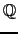
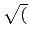

suivant: Factorisation sans facteur carré
monter: Les polynômes
précédent: Factorisation sur les entiers
Table des matières
Index
Factorisation : factor factoriser
factor a pour argument un polynôme ou une liste de
polynômes et éventuellement sqrt(n).
factor factorise le polynôme ou la liste de polynômes
sur les réels en mode réel et sur les complexes en mode
complexe Les coefficients des facteurs sont dans
(n)) si
Sqrt est coché dans la configuration du cas ou si sqrt(n)
est le second argument (voir aussi 6.13.9).
Note pour être en mode réel (ou complexe) décochez (ou cochez)
Complexe dans la configuration du
cas que l'on ouvre avec le bouton donnant la ligne d'état.
On tape :
factor(x^2+2*x+1)
On obtient :
(x+1)^2
On tape :
factor(x^4-2*x^2+1)
On obtient :
(-x+1)^2*(x+1)^2
On tape :
factor(x^ 3-2*x^2+1)
On obtient si Sqrt n'est pas coché dans la configuration du cas :
(x-1)*(x^2-x-1)
On tape :
factor(x^ 3-2*x^2+1)
On obtient si Sqrt est coché dans la configuration du cas :
(x-1)*(x+(sqrt(5)+1)/2)*(x+(-sqrt(5)+1)/2)
On tape :
factor(x^ 3-2*x^2+1,sqrt(5))
On obtient si Sqrt est coché ou non dans la configuration du
cas :
((2*sqrt(5)-19)*((sqrt(5)+15)*x+7*sqrt(5)-5)*(-x+1)*((sqrt(5)+25)*x-13*sqrt(5)-15))/6820
On tape :
factor(x^2+1)
On obtient en mode réel :
x^2+1
On obtient en mode complexe :
((-i)*x+1)*((i)*x+1)
suivant: Factorisation sans facteur carré
monter: Les polynômes
précédent: Factorisation sur les entiers
Table des matières
Index
Documentation de giac écrite par Renée De Graeve